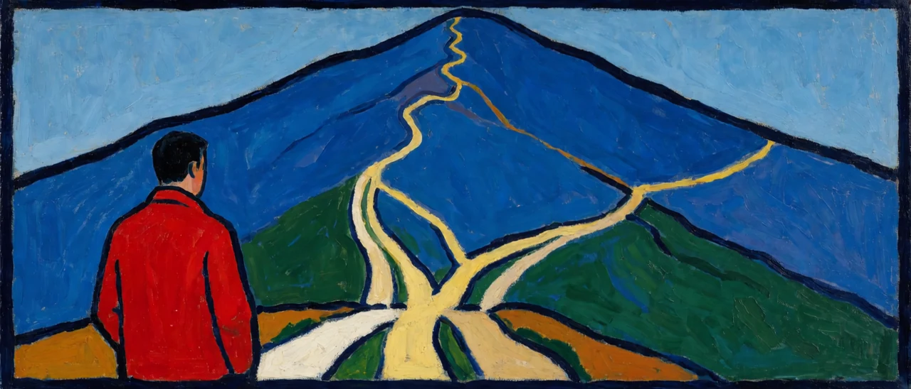
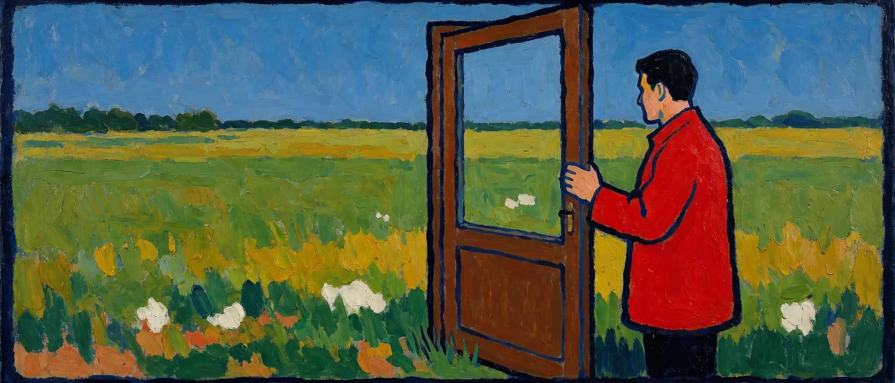

화신·핸들러·거버너와 겉모양이 닮은 구도는 여러 전통에 이미 있다. 닮았다는 것만으로는 아무것도 확인되지 않는다. 갈라지는 지점을 짚어야 거버너 개념의 경계가 선명해진다. 비교의 기준은 두 가지이다. 첫째.. 거버너를 도달해야 할 상태로 두는가.. 이미 작동 가능한 기능으로 두는가. 둘째.. 시공 좌표와 자타 경계를 세계의 사실로 전제하는가.. 생존을 위한 설정으로 보는가. 이 글은 영성 전통 쪽을 다룬다. 이 전통들은 대체로 첫째 기준에서 갈라진다.

1. 아드바이타 베단타 - 사크쉰(목격자 의식)
생멸에 종속되지 않는 관찰자라는 점에서 구조적 유사성이 있다. 사크쉰은 명상과 요가라는 특수한 수단으로.. 도달해야 하는 수행 목표이며.. 브라흐만이라는 형이상학적 실체와의 동일시를 전제한다. 도달의 서사이고 실체의 서사이다. 거버너는 도달할 곳이 없고.. 동일시할 실체도 두지 않는다.
2. 영지주의(그노시스) - 프네우마와 세 부류 인간론
영지주의는 인간을 힐릭(육적 존재, 물질에 매몰).. 사이킥(혼적 존재, 신앙과 윤리로 절제하는 존재).. 프네우마틱(영적 존재, 신성의 파편인 프네우마를 지닌 존재)의 세 부류로 나눈다. 이 삼분법은 화신-핸들러-거버너와 표면적으로 대응해 보인다. 결정적 차이는 프네우마가 물질계에 갇혀 있다가.. 그노시스를 통해 본향인 플레로마로 귀환해야 하는.. 실체라는 점이다. 탈출과 귀환의 서사는 갇힌 곳과 돌아갈 곳이라는 두 장소를 요구한다. 트리거 문장은 지금여기를 벗어난 적이 없다고 말하므로 두 장소를 모두 부정한다.
프네우마틱 인간이 외견상 평범함 속에서 내적으로만 실현된다고 서술되는 대목은.. 켜진산자가 종교적 특수 상태가 아니라 일상에서 작동한다는 규정과 태도상의 접점을 이룬다.
3. 수피즘 - 나프스, 칼브, 루흐의 삼분법
자파르 알사디크 이래의 수피 심리학은 인간을 나프스(낮은 자아, 욕망과 충동에 매인 자아).. 칼브(심장, 균형과 성찰의 자리).. 루흐(영, 신에게 근접한 최상위 층위)로 구분한다. 위계적 삼분 구조의 형식은 화신-핸들러-거버너와 같다. 루흐는 신과의 근접성이라는 상승 경로의 끝점이므로 도달의 서사에 속한다. 나프스를 침묵시키고 루흐를 드러낸다는 수행 목표는.. 거버너가 이미 작동 가능한 상태로 있다는 전제와 대비된다.
4. 카발라 - 루리아의 니초초트
16세기 이삭 루리아의 이론은 그릇이 깨지며(셰비라트 하켈림) 신성한 빛의 파편(니초초트)이 물질 속에 흩어졌다고 본다. 영지주의의 프네우마 개념과 구조적으로 거의 같고.. 흩어진 빛을 모아 회복(티쿤)한다는 구원사적 서사를 공유한다. 영지주의와 같은 이유로 거버너 개념과 갈라진다.
5. 족첸(대원만) - 릭빠
티베트 족첸 전통의 릭빠(순수 인식, 본연의 자각)는 새로 도달해야 하는 목표가 아니라 이미 항상 있어 온 근본 바탕(gzhi, 근)으로 규정되며.. 스승의 직지(direct introduction)를 통해 문득 알아차려진다. 트리거 문장을 통한 거버너의 즉각적 활성화와 서사 구조가 같다. 갈라지는 지점은 두 가지이다. 첫째.. 대다수 족첸 교설에서 직지는 인증된 스승의 가피를 필수 경로로 요구하고.. 트리거는 특정 권위 없이 문장 자체의 인식만으로 작동한다. 둘째.. 릭빠는 공성과 광명이 불이를 이루는 궁극적 실재로 규정되어 존재론적 절대자의 위상을 받는다. 거버너는 실재의 이름이 아니라 2차 표상이라는 기능의 이름이다.
6. 정리
구원 서사 계열인 베단타.. 영지주의.. 수피즘.. 카발라는 벗어나야 할 곳과 돌아갈 곳을 상정하므로 트리거 문장과 정면으로 배치된다. 족첸의 릭빠는 도달이 아닌 재인이라는 구도를 공유해 가장 가깝게 닿지만.. 스승 매개와 절대자 존재론을 떨쳐 내지 못한다. 거버너는 갈 곳도.. 데려다줄 스승도.. 동일시할 절대자도 두지 않는다.

갈 곳이 없으면 도달할 것도 없다.